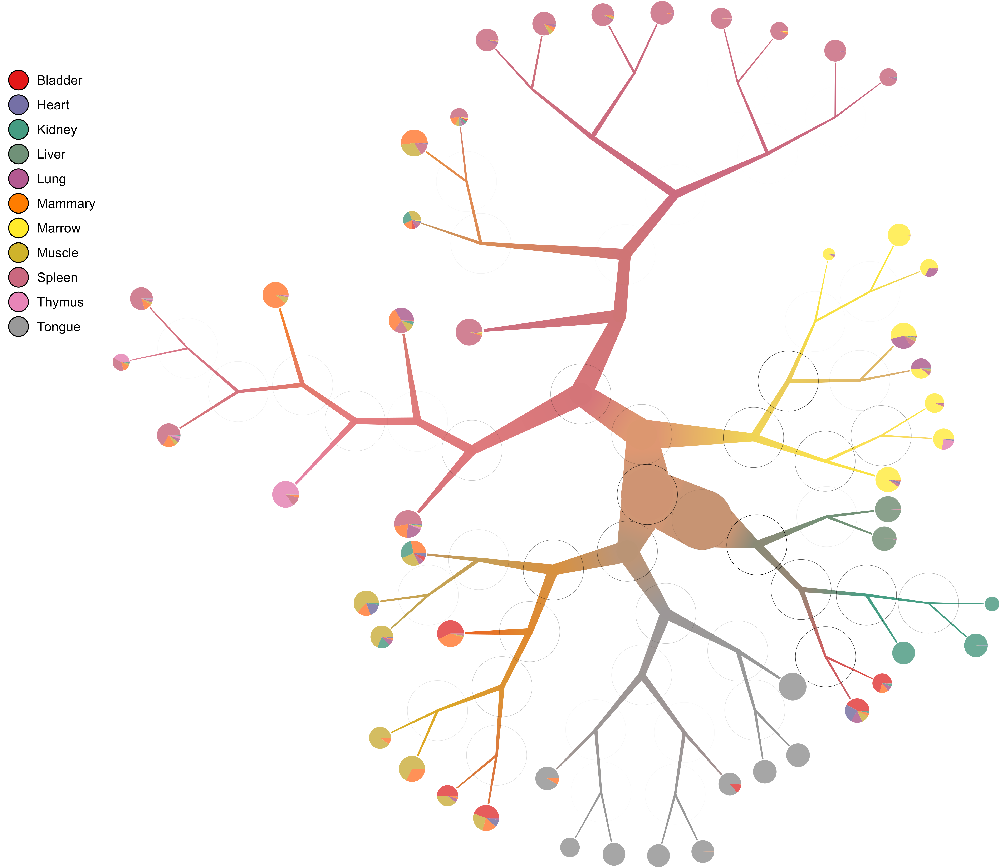

birch-beer
Table of Contents
See https://github.com/GregorySchwartz/birch-beer for latest version.
1 Description
birch-beer is all about sweet trees. That is, visualizing hierarchical
structures where the elements are stored in leaves and parent nodes represent
all of the descendant leaves. Using branch scaling, weighted average color
blending, distance markers, and more, we can all create some home brewed
birch-beer together!
2 Installation
2.1 Dependencies
You may require the following dependencies to build and run (from Ubuntu 16.04, use the appropriate packages from your distribution of choice):
- build-essential
- libgmp-dev
- libblas-dev
- liblapack-dev
- libgsl-dev
- libgtk2.0-dev
- libcairo2-dev
- libpango1.0-dev
- graphviz
2.2 Install stack
See https://docs.haskellstack.org/en/stable/README/ for more details.
curl -sSL https://get.haskellstack.org/ | sh stack setup
2.3 Install birch-beer
2.3.1 Online
We only require stack (or cabal), you do not need to download any source
code, just run the following command to place birch-beer in your
~/.local/bin/:
stack install birch-beer
2.3.2 Source
stack install
3 Usage
For a more detailed look at many of the features, check out the
too-many-cells README about make-tree, which uses birch-beer to plot
single cell clades with examples. At any point, use birch-beer -h to see the
help. The general usage would be:
birch-beer --input tree.json --labels-file labels.csv
3.1 Tree format
The input tree format should be a json file with a recursive structure. An
object is represented by
[{"_distance": DOUBLE, "_item": [STRING]}, [SUBFOREST]], where "_distance"
and "_item" are optional, usually, having "_distance" for inner nodes and
"_item" for leaves. Supports rose trees as well! For example:
[{"_distance": 0.8}, [[{"_item": ["1", "2"]}, [[{"_item": ["3", "4", "5"]}, []], [{"_item": ["6", "7"]}, []]]], [{"_item": ["8", "9", "10", "11"]}, []]]]
3.2 Labels format
To assign labels (and thus colors) to the elements within the tree, make a csv
file with an item,label format. Both columns are treated as strings, so
anything can be used as long as the item column matches the item strings in
the tree. For example to go with the above tree:
item,label 1,1 2,1 3,2 4,2 5,2 6,3 7,1 8,1 9,3 10,3 11,2
4 Select examples
4.1 Large tree

4.2 Number overlay

4.3 Distance overlay

4.4 Continuous color saturation

4.5 Continuous multi-color saturation

4.6 Diversity of labels